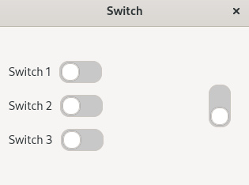
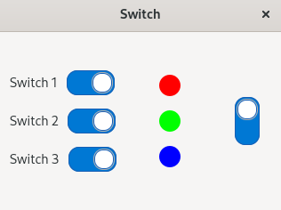

(update:2026/4/30)
Gtk::Switch は、gtkmm4 の中でオン／オフを切り替えるためのシンプルで直感的なトグルスイッチのようなユーザーインターフェースを提供するウィジェットです。スライダーをドラッグしたりクリックすることにより状態を変更することができます。
ユーザーは、次の操作で Gtk::Switch の状態を切り替えることができます。
Gtk::Switch には、二種類の状態が存在します。
| 状態の種類 | 内 容 |
| active | 表示上のon/off(ユーザーインターフェースの状態) |
| state | バックエンドの実際の状態(遅延反映用) |
※バックエンド処理が遅れる場合に、ユーザーインターフェースと内部状態を一時的に分離することができます。
| シグナル | シグナルが発生するタイミング | 用 途 |
| notify::active | active が実際に変わった後 | ユーザーインターフェースの更新や処理の反映 |
| state_set() | ユーザーが操作した瞬間（active が変わる前） | 状態変更をアプリ側で許可／拒否したいとき |
Gtk::Switchは、次の CSS ノードを持っています
switch
└── slider
Gtk::Switch のactiveプロパティのon/offをセットします。デフォルトは、true(on)です。
void Gtk::Switch::set_active( bool is_actibe=true )
Gtk::Switch のactiveプロパティの値を返します。
bool Gtk::Switch::get_active() const
Gtk::Switch のstateプロパティのon/offをセットします。デフォルトは、true(on)です。
void Gtk::Switch::set_active( bool is_actibe=true )
Gtk::Switch のstateプロパティの値を返します。
bool Gtk::Switch::get_active() const
Gtk::StackSwitcher は、CSS でタブ風・ボタン風・フラット UI など自由に変更できます。
【変更前】ユーザーが Gtk::Switch を操作した時点でシグナルが発生します。
【戻り値】bool型です。trueで変更をキャンセルすることができます。
【用 途】妥当性の確認、変更の拒否
【使用例】
MyWindow::MyWindow() {
auto switch = Gtk::make_managed<Gtk::Switch>();
switch->signal_state_set().connect(
sigc::mem_fun( *this, &MyWindow::on_state_set ),
false
);
}
bool on_state_set( bool new_state ) {
std::cout << "[Before] User tries to change state to: "
<< ( new_state ? "ON" : "OFF" ) << std::endl;
// 例：OFF → ON を禁止したい場合
if ( new_state == true ) {
std::cout << " → ON は禁止します" << std::endl;
return true; // true = 切り替えをキャンセル
}
return false; // false = 切り替え許可
}
【変更後】プロパティが確定した後にシグナルが発生します。
【戻り値】voidl型(戻り値は無し)です。
【用 途】ユーザーインターフェースの更新、ロジックの反映
【使用例】
MyWindow::MyWindow() {
auto switch = Gtk::make_managed<Gtk::Switch>();
switch->property_active().signal_changed().connect(
sigc::mem_fun( *this, &MyWindow::on_active_changed )
);
}
void on_active_changed() {
bool state = switch->get_active();
std::cout << "[After] Switch state changed to: "
<< ( state ? "ON" : "OFF" ) << std::endl;
}
Gtk::Stack に表示するページを登録し、その後、Gtk::Stack を Gtk::StackSwitcher に結びつけます。
Gtk::Switch を宣言します。
右側の Gtk::Switch の css class をadd_css_class() を用いて読み込みます。Gtk::Switch の表示を縦向きに指定します。
set_active() を用いて、Gtk::Switch(right_switch) の activeプロパティを true にセットします。
#include <gtkmm.h>
#include <cmath>
#include <iostream>
class ColorCirclesArea : public Gtk::DrawingArea {
public:
ColorCirclesArea();
virtual ~ColorCirclesArea() = default;
void set_circle_visible( int index, bool v );
void set_all( bool v );
private:
std::array<bool, 3> visible{ false, false, false };
std::array<Gdk::RGBA, 3> colors;
protected:
void on_draw( const Cairo::RefPtr<Cairo::Context>& cr, int width, int height );
};
ColorCirclesArea::ColorCirclesArea()
{
set_content_width( 80 );
set_content_height( 150 );
colors[0].set_rgba(1, 0, 0, 1);
colors[1].set_rgba(0, 1, 0, 1);
colors[2].set_rgba(0, 0, 1, 1);
set_draw_func( sigc::mem_fun( *this, &ColorCirclesArea::on_draw ));
}
void ColorCirclesArea::set_circle_visible( int index, bool v )
{
visible[index] = v;
queue_draw();
}
void::ColorCirclesArea::set_all( bool v )
{
visible = { v, v, v };
queue_draw();
}
void::ColorCirclesArea::on_draw( const Cairo::RefPtr<Cairo::Context>& cr, int width, int height )
{
const int radius = 12;
const int spacing = 40;
int cx = width / 2;
int cy = height / 2 - spacing;
for (int i = 0; i < 3; ++i) {
if (visible[i]) {
cr->set_source_rgba(
colors[i].get_red(),
colors[i].get_green(),
colors[i].get_blue(),
1.0
);
cr->arc(cx, cy, radius, 0, 2 * M_PI);
cr->fill();
}
cy += spacing;
}
}
class MyWindow : public Gtk::Window {
public:
MyWindow();
virtual ~MyWindow() = default;
private:
void on_left_switch_changed( int index );
bool on_right_switch_state_set( bool new_state );
void load_css();
Gtk::Box root_box{ Gtk::Orientation::HORIZONTAL };
Gtk::Box switch_box{ Gtk::Orientation::VERTICAL };
Gtk::Box right_box{ Gtk::Orientation::VERTICAL };
ColorCirclesArea* m_area;
// 1.child widget の宣言
Gtk::Switch* right_switch;
std::vector<Gtk::Switch*> left_switches;
};
MyWindow::MyWindow()
{
set_title( "Switch" );
set_default_size( 320, 240 );
set_resizable( false );
// CSS 読み込み
load_css();
set_child( root_box );
root_box.set_orientation( Gtk::Orientation::HORIZONTAL );
root_box.set_spacing( 20 );
root_box.set_halign( Gtk::Align::CENTER );
root_box.set_valign( Gtk::Align::CENTER );
// 左側：Switch Box
switch_box.set_orientation( Gtk::Orientation::VERTICAL );
switch_box.set_spacing( 15 );
switch_box.set_halign( Gtk::Align::CENTER );
switch_box.set_valign( Gtk::Align::CENTER );
// 中央：DrawingArea
m_area = Gtk::make_managed<ColorCirclesArea>();
// 右側：回転スイッチ
right_box.set_orientation( Gtk::Orientation::VERTICAL );
right_box.set_spacing( 10 );
right_box.set_halign( Gtk::Align::CENTER );
right_box.set_valign( Gtk::Align::CENTER );
right_switch = Gtk::make_managed<Gtk::Switch>();
// 2.css class の読み込み (右側の Gtk::Switch の表示を縦向きに指定)
right_switch->add_css_class( "switch-rotate-90" );
// 3.右側の Gtk::Switch の active を true にセット
right_switch->set_active( true ); // ★ 初期値 ON
right_box.append( *right_switch );
// 4.signal_state_set() にシグナルハンドラーを接続
right_switch->signal_state_set().connect(
sigc::mem_fun( *this, &MyWindow::on_right_switch_state_set ),
false
);
// 左側の 3 つのスイッチ
for (int i = 0; i < 3; ++i) {
auto sw = Gtk::make_managed<Gtk::Switch>();
sw->set_active( false ); // ★ 初期値 ON
left_switches.push_back( sw );
int index = i;
// 5.activeプロパティが変化した時にシグナルを発生させ、シグナルハンドラーを接続
sw->property_active().signal_changed().connect(
sigc::bind(
sigc::mem_fun( *this, &MyWindow::on_left_switch_changed ),
index
)
);
auto row = Gtk::make_managed<Gtk::Box>( Gtk::Orientation::HORIZONTAL );
row->set_spacing( 10 );
auto label = Gtk::make_managed<Gtk::Label>( "Switch " + std::to_string(i + 1) );
row->append( *label );
row->append( *sw );
switch_box.append( *row );
}
// root に追加
root_box.append( switch_box );
root_box.append( *m_area );
root_box.append( right_box );
// 初期状態：円も全部 OFF
m_area->set_all( false );
}
void MyWindow::load_css()
{
auto css = Gtk::CssProvider::create();
try {
css->load_from_path( "style.css" );
} catch( const Glib::Error& ex ) {
std::cerr << "CSS load error: " << ex.what() << std::endl;
return;
}
Gtk::StyleContext::add_provider_for_display(
Gdk::Display::get_default(),
css,
GTK_STYLE_PROVIDER_PRIORITY_USER
);
}
void MyWindow::on_left_switch_changed( int index )
{
m_area->set_circle_visible( index, left_switches[index]->get_active() );
}
bool MyWindow::on_right_switch_state_set( bool new_state )
{
if ( new_state ) {
// ★ ON にしようとしている → 全部 ON
for ( auto sw : left_switches ) sw->set_active( true );
m_area->set_all( true );
return false; // 切り替え許可
}
// ★ OFF にしようとしている
bool any_on = false;
for ( auto sw : left_switches ) {
if ( sw->get_active() ) {
any_on = true;
break;
}
}
if ( !any_on ) {
// ★ 全部 OFF → right_switch_ を OFF にするのは禁止
return true; // ← 切り替えキャンセル（動かない）
}
// ★ 1つでも ON → OFF を許可
for ( auto sw : left_switches ) sw->set_active( false );
m_area->set_all( false );
return false; // 切り替え許可
}
int main( int argc, char* argv[] )
{
auto app = Gtk::Application::create( "switch.example" );
return app->make_window_and_run<MyWindow<( argc, argv );
}
/* ================================
Switch（フラットデザイン）
================================ */
switch {
min-width: 42px;
min-height: 24px;
border-radius: 12px;
background: #c8c8c8; /* OFF の背景 */
transition: background 160ms ease;
}
/* ノブ（slider） */
switch > slider {
background: #ffffff;
min-width: 20px;
min-height: 20px;
margin: 2px;
border-radius: 10px;
box-shadow: 0 0 0 1px #b0b0b0;
transition: transform 160ms ease, background 160ms ease;
}
/* ON のとき */
switch:checked {
background: #0078d4;
}
/* hover */
switch:hover {
background: #b0b0b0;
}
switch:checked:hover {
background: #0a84e8;
}
/* 右側の Switch を 270° 回転 */
.switch-rotate-90 {
transform: rotate( 270deg );
}
| Gtk::Switch | |
|---|---|
| active : off | active : on |
 |
 |
| Previous | Top | Next |
| Copyright (c) Henrry Yamm Project All Rights Reserved. |
|---|